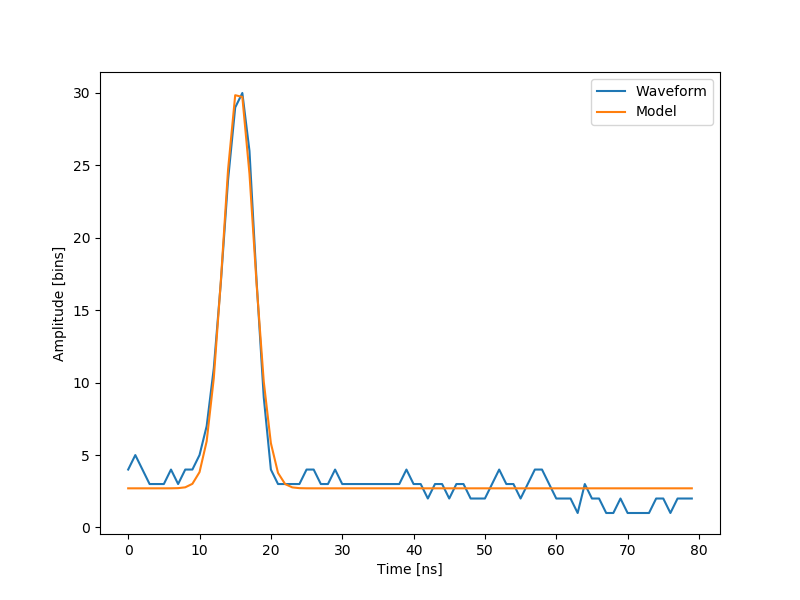

Note
Click here to download the full example code
The lidar system, data and fit (1 of 2 datasets)¶
Generate a chart of the data fitted by Gaussian curve
Out:
[ 2.70363341 27.82020742 15.47924562 3.05636228]
import numpy as np
import matplotlib.pyplot as plt
from scipy.optimize import leastsq
def model(t, coeffs):
return coeffs[0] + coeffs[1] * np.exp(- ((t-coeffs[2])/coeffs[3])**2)
def residuals(coeffs, y, t):
return y - model(t, coeffs)
waveform_1 = np.load('waveform_1.npy')
t = np.arange(len(waveform_1))
x0 = np.array([3, 30, 15, 1], dtype=float)
x, flag = leastsq(residuals, x0, args=(waveform_1, t))
print(x)
fig, ax = plt.subplots(figsize=(8, 6))
plt.plot(t, waveform_1, t, model(t, x))
plt.xlabel('Time [ns]')
plt.ylabel('Amplitude [bins]')
plt.legend(['Waveform', 'Model'])
plt.show()
Total running time of the script: ( 0 minutes 0.063 seconds)